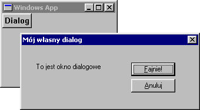

| << Poprzednia czêœæ kursu Spis Strona g³ówna Nastêpna czêœæ kursu >> |
Ma³o która windowsowa aplikacja sk³ada siê z jednego jedynego okienka. Jeœli chcemy zbudowaæ coœ bardziej skomplikowanego ni¿ Notatnik, powinniœmy do dyspozycji u¿ytkownika daæ jeszcze wiele innych okienek: do otwierania plików, do pokazywania pomocy i informacji o aktualnej wersji programu, do wyszukiwania s³ów w tekœcie, do zmiany ustawieñ itp.

Te wszelkie pomniejsze okienka zwane s¹ na ogó³ oknami dialogowymi, poniewa¿ s³u¿¹ w³aœnie do czegoœ w rodzaju dialogu miêdzy userem a aplikacj¹. Niektórzy leniwi programiœci (tak jakby istnieli pracowici... ;-)) id¹ sobie na ³atwiznê i z dialogu robi¹ czêsto monolog, tzn. u¿ytkownik wpisuje jakieœ dane, a program ma to wszystko tylko zaakceptowaæ. Praktyka pokazuje jednak, ¿e beztroska lub niewiedza userów nie zna granic, dlatego te¿ wszelkie wprowadzane przez te ofiary losu dane nale¿y na bie¿¹co kontrolowaæ, czy spe³niaj¹ ustalone wymagania, czy te¿ nie. Ale to tylko tak na marginesie.
Okno dialogowe naj³atwiej stworzyæ za poœrednictwiem pliku zasobów (resource file). Jest to zwyk³y plik tekstowy z rozszerzeniem *.rc, zawieraj¹cy skrypty zasobów. Wiele IDE tworzy domyœlnie taki plik dla ka¿dego projektu. I tak na przyk³ad Dev-C++ w wersji oznacznej czwórk¹ mia³ nawet swój w³asny, ma³y edytorek do takich plików, niestety podczas tworzenia pi¹tej wersji edytorek gdzieœ siê twórcom zapodzia³ :-(. Bardziej profesjonalne narzêdzia w rodzaju MS Visual C++ posiadaj¹ potê¿ne wizualne edytory to tworzenia dialogów. Bez wzglêdu na to, czy twój IDE ma jakiœ edytor plików *.rc czy te¿ nie, na pewno przyda ci siê wiedza, jak taki plik wygl¹da w œrodku:
|
#include <windows.h> #include "dialog.h" IDD_MOJDIALOG DIALOG DISCARDABLE 20, 20, 200, 66 STYLE DS_MODALFRAME | WS_POPUP | WS_CAPTION | WS_SYSMENU CAPTION "Mój w³asny dialog" FONT 8, "MS Sans Serif" { DEFPUSHBUTTON "&Fajnie!",IDOK,124,18,50,14 PUSHBUTTON "&Anuluj",IDCANCEL,124,35,50,14 LTEXT "To jest okno dialogowe",IDC_LABEL,16,18,80,33 } |
Ca³y ten badziew powy¿ej odpowiedzialny jest za stworzenie prostego okna dialogowego, co okreœla pierwsza linijka. Zaczyna siê ona od identyfikatora IDD_MOJDIALOG. Jest to zwyk³a sta³a o ustalonej przez nas wartoœci (praktycznie dowolnej, byle unikalnej - w skali aplikacji), a konkretnie makro, które musimy sobie zdefiniowaæ sami, za pomoc¹ dyrektywy #define oczywiœcie. Najlepiej bêdzie zrobiæ osobny plik nag³ówkowy, na przyk³ad dialog.h (tak jak to zrobiliœmy w powy¿szym przyk³adzie) i wrzuciæ do niego tê oraz wszystkie nastêpne deklaracje identyfikatorów dla elementów naszego dialogu:
|
#define IDD_MOJDIALOG 200 #define IDC_LABEL 201 |
Czasami jest konieczne do³¹czenie do pliku zasobów odpowiedniego nag³ówka, zawieraj¹cego definicje takich sta³ych, jak PUSHBUTTON czy LTEXT, niezbêdnych do przetwarzania plików *.rc (wszystkie te sta³e opisane s¹ tam gdzie zwykle, czyli w MSDN :-)). Nazwa takiego nag³ówka jest zale¿na od u¿ywanego IDE, zazwyczaj jednak wystarczy do³¹czyæ windows.h, który zajmie siê ca³¹ brudn¹ robot¹ :-).
S³owo DISCARDABLE oznacza, ¿e dany zasób mo¿e byæ wrzucony do pamiêci wirtualnej na dysku, jeœli nie jest akurat u¿ywany. Nastêpuj¹ce po nim liczby, nietrudno siê domyœliæ, to wspó³rzêdne i wymiary okna dialogowego. Niestety, nie w pikselach. Oficjalnie dla u³atwienia programistom ¿ycia, praktycznie w celu dok³adnie odwrotnym wymyœlono, ¿e jednostki miary w plikach zasobów zale¿ne s¹ od wielkoœci czcionki u¿ywanej przez system. Poniek¹d s³usznie, gdy¿ jeœli trafi siê jakiœ odmieniec u¿ywaj¹cy fonta wielkoœci 20 punktów, to nasz dialog bêdzie automatycznie do tego przystosowany...
Druga linijka zasobu z naszym dialogiem nie jest trudna do rozszyfrowania - tak, to kombinacja stylów dla okna, s¹ one identyczne z tymi stosowanymi przez funkcjê CreateWindow. Styl DS_MODALFRAME jest typowy dla modalnych okien dialogowych, o tym trochê póŸniej. Trzecia i czwarta linijka - tajne zastosowanie, tylko dla or³ów ;-).
Dalej otwieramy "blok instrukcji" (niektóre kompilatory mog¹ wymagaæ s³ów BEGIN i END zamiast nawiasów klamrowych). Jest to miejsce na deklaracje elementów naszego dialogu, czyli kontrolek, które siê na nim znajd¹. U nas bêd¹ trzy: dwa przyciski, OK i Anuluj (pierwszy z nich bêdzie domyœlnym przyciskiem), oraz jakiœ napis. Niepotrzebne nam s¹ tutaj dodatkowe identyfikatory dla przycisków, poniewa¿ dla niektórych najczêœciej u¿ywanych elementów okna dialogowego mamy predefiniowane identyfikatory systemowe - w naszym przypadku IDOK i IDCANCEL.
Za wszystkie akcje u¿ytkownika na g³ównym oknie odpowiedzialna jest procedura okna. Okno dialogowe nie jest tutaj ¿adnym wyj¹tkiem, te¿ musi mieæ podobn¹ procedurê. Wygl¹da ona mniej wiêcej tak:
|
BOOL CALLBACK DlgProc(HWND hwnd, UINT Msg, WPARAM wParam, LPARAM lParam) { switch(Msg) { case WM_INITDIALOG: { } break; case WM_COMMAND: { } break; default: return FALSE; } return TRUE; } |
Nazwa procedury dialogowej zale¿y oczywiœcie wy³¹cznie od ciebie, nie musi to byæ DlgProc.
Najwa¿niejsz¹ rzecz widaæ od razu po typie naszej procedurki: dla komunikatów, których nie obs³u¿ymy, nie musimy (a nawet nie mo¿emy) wywo³aæ DefWindowProc. Jeœli nie interesuje nas dany komunikat, po prostu zwracamy FALSE, w przeciwnym wypadku obs³ugujemy komunikat, po czym break przenosi nas na zewn¹trz konstrukcji switch, sk¹d procedura wraca z wartoœci¹ TRUE.
Wspomnia³em wczeœniej, ¿e tworzymy dialog modalny. Oznacza to, ¿e od momentu pokazania okna dialogowego a¿ do jego zamkniêcia u¿yszkodnik nie mo¿e wykonywaæ ¿adnych czynnoœci na oknie rodzicielskim (czyli w naszym przypadku na oknie g³ównym naszego programu). A wiêc procedura DlgProc nie zwróci wartoœci, dopóki okno dialogowe nie zostanie zamkniête. Do tego momentu sterowanie nale¿y do dialogowej pêtli komunikatów (ka¿dy dialog ma w³asn¹, niezale¿n¹ od tej, któr¹ umieœciliœmy w funkcji WinMain!).
No w³aœnie - jak zamkn¹æ okno dialogowe? Oczywiœcie, u¿ytkownik zawsze mo¿e skorzystaæ ze standardowych sposobów (Alt+F4, krzy¿yk w prawym górnym rogu itp.), ale by³oby iœcie pod³ym czynem zmuszaæ go do szukania takich drastycznych rozwi¹zañ. U¿ytkownik te¿ cz³owiek, jak by nie patrzeæ, a w dodatku posiada te¿ rozum i woln¹ wolê i naprawdê nie lubi programów o nieprzyjaznym interfejsie, a jak nie lubi, to i nie bêdzie ich u¿ywaæ - czego, rzecz ciemna, nie chcemy. Ale doœæ gadania - zwykle na oknie dialogowym umieszcza siê przyciski OK i Anuluj, lub coœ podobnego. Zapominamy o DestroyWindow, no a ¿eby przycisk zamyka³ dialog, nale¿y mu przypisaæ nastêpuj¹cy kod:
|
EndDialog(hwnd, ID_RETVAL); |
Proste, nieprawda¿? Oczywiœcie hwnd to uchwyt okna dialogowego, które niszczymy, a zamiast ID_RETVAL wstawiamy wartoœæ, któr¹ ma zwróciæ makro DialogBox (zwykle jest to ID jakiegoœ przycisku albo coœ w tym rodzaju). Warto by jeszcze wspomnieæ o jednym drobiazgu, mianowicie dla dialogów nie wystêpuje komunikat WM_CREATE, zamiast niego mamy WM_INITDIALOG (którego oczywiœcie nie.
No to brudn¹ robotê mamy za sob¹, czas poznaæ instrukcjê, otwieraj¹c¹ dialog. Zowie siê ona po prostu DialogBox (uwaga: jest to makro, a nie funkcja!), a sk³adniê ma tak¹ oto:
| int DialogBox(HINSTANCE hInstance, LPCTSTR lpTemplate, HWND hWndParent, DLGPROC lpDialogFunc) | |
| Argument | Znaczenie |
|---|---|
| hInstance | Uchwyt do naszej aplikacji |
| lpTemplate | Identyfikator wzorca dialogu |
| hWndParent | Uchwyt okna wywo³uj¹cego dialog |
| lpDialogFunc | WskaŸnik do procedury dialogowej |
Jako uchwyt do wyst¹pienia programu mo¿emy wykorzystaæ parametr hInstance, przekazany przez system do funkcji WinMain. Mo¿emy równie¿ uzyskaæ ten uchwyt poza WinMain, wywo³uj¹c funkcjê GetModuleHandle z argumentem NULL.
Identyfikator naszego dialogu to IDD_MOJDIALOG (czyli 200). Aby z liczby tej zrobiæ argument typu LPCSTR, u¿ywamy makra MAKEINTRESOURCE.
No i argument hWndParent oznacza okno, wywo³uj¹ce dialog (bêdzie ono rodzicem dla okna dialogowego), natomiast lpDialogFunc - adres utworzonej przez nas przed chwil¹ procedury dialogowej. To wszystko, dialog gotowy. Przedstawiam teraz kompletny kod przyk³adowej aplikacji z dialogiem (jednak bez tworzenia okna, bo pewne rzeczy na pewnym etapie zaczynaj¹ nudziæ ;-)):
|
#include <windows.h> #include "dialog.h" //Prototypy funkcji obs³uguj¹cych komunikaty. //Sztuk dwie, jedna dla okna g³ównego, jedna dla dialogu ;-) LRESULT CALLBACK WndProc(HWND, UINT, WPARAM, LPARAM); BOOL CALLBACK DlgProc(HWND, UINT, WPARAM, LPARAM); int WINAPI WinMain (HINSTANCE hThisInstance, HINSTANCE hPrevInstance, LPSTR lpszArgument, int nFunsterStil) { // // Tworzenie okna - saaaam to sobie zrób ;-) // //Tworzymy jakiœ przycisk do wywo³ania dialogu HWND hPrzyc = CreateWindowEx(0, "BUTTON", "Dialog", WS_CHILD | WS_VISIBLE, 5,5,50,25, hwnd, NULL, hThisInstance, NULL); //Pokazujemy g³ówne okno ShowWindow(hwnd, nFunsterStil); //No i standardowo - pêtelka while(GetMessage(&msg, NULL, 0, 0)) { TranslateMessage(&msg); DispatchMessage(&msg); } return msg.wParam; } //Procedura okna LRESULT CALLBACK WndProc(HWND hwnd, UINT mesg, WPARAM wParam, LPARAM lParam) { switch(mesg) { case WM_COMMAND: { //Tutaj wywo³ujemy nasz dialog int ret = DialogBox(GetModuleHandle(NULL), MAKEINTRESOURCE(200), hwnd, DlgProc); if(ret == IDOK) MessageBox(hwnd, "Wybra³eœ 'Fajnie' w oknie dialogowym!", "Test", MB_ICONINFORMATION); else if(ret == IDCANCEL) MessageBox(hwnd, "Wybra³eœ 'Anuluj' w oknie dialogowym!", "Test", MB_ICONINFORMATION); } break; case WM_DESTROY: PostQuitMessage(0); break; default: return DefWindowProc(hwnd, mesg, wParam, lParam); } return 0; } //Procedura dialogowa BOOL CALLBACK DlgProc(HWND hwnd, UINT Msg, WPARAM wParam, LPARAM lParam) { switch(Msg) { case WM_COMMAND: { //reakcja na przyciski switch(LOWORD(wParam)) { case IDOK: EndDialog(hwnd, IDOK); break; case IDCANCEL: EndDialog(hwnd, IDCANCEL); break; } } break; default: return FALSE; } return TRUE; } |
Na koniec mi³a niespodzianka: pêtla komunikatów okna dialogowego bêdzie wykonywa³a za nas pewne niemi³e czynnoœci! Mam na myœli prze³¹czanie siê miêdzy kontrolkami za pomoc¹ TAB-a oraz dostêp do kontrolek za pomoc¹ skrótów z lewym ALT-em. W dalszej czêœci tego kursu poka¿ê prost¹ sztuczkê, dziêki której mo¿na trochê "oszukaæ" system i zaimplementowaæ te przydatne drobiazgi równie¿ i w "zwyk³ym" oknie.
| << Poprzednia czêœæ kursu Spis Strona g³ówna Nastêpna czêœæ kursu >> |